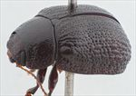
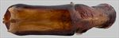
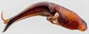
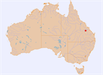

Click on images to enlarge
{kind=link}

Male, Blackdown Tableland, Central Queensland
{kind=link}

Aedeagus, dorsal view (Blackdown Tablelands, Queensland)
{kind=link}

Aedeagus, lateral view (Blackdown Tablelands, Queensland)
{kind=link}

Distribution
Name
Trachymela sp. Ta243
Reference specimen
GM-110, Blackdown Tablelands, Central Queensland [QM]
Adult Description
Length: ♀ ? mm [0], ♂ 7.5-7.6 mm [2].
Colour: head: very dark-brown, almost black, labrum yellow-brown, mandibles very dark reddish-brown with black tips; antennomeres 1-3 light-brown, 4-11 slightly darker; pronotum: uniformly very dark reddish-brown, fractionally darker than head, anterior margin and extreme lateral edge black; scutellum: black; elytra: very dark-brown, same shade as pronotum, with elevated verrucae of a slightly lighter shade, humeral callus same shade as surrounding region; venter: head and thoracic and abdominal ventrites black, legs a fractionally paler shade, elytral epipleura black. Cuticular wax: unknown.
Shape: moderate-sized, noticeably flattened, greatest height viewed laterally well behind middle of elytral margin; Head; punctures moderate in size (pd~2=2.5xef), many slighly elongated, and evenly and moderately densely distributed. Antennae moderately long (AL ♂=38-44%BL, ♀=?%BL), filiform. Pronotum; almost evenly curved transversely with only extreme lateral margins becoming very slightly explanate, foveal depression very shallow and relatively small in extent, with a broad, round, very slightly elevated area near its postero-lateral extreme, punctures clearly impressed, those on discal area similar in size to those on head, evenly and moderately densely distributed, becoming much coarser towards lateral margins. Front margins thickened from behind inside of eye to lateral margin, joining lateral margins in a smoothly rounded right-angle, with lateral margin initially straight for a short length then curving smoothly towards rear margin, prothorax widest about ½ distance to rear margin, barely narrowing from there. Scutellum; smooth and unpunctured. Elytra; surface very lightly curved in anterior half, curvature becoming increasingly greater towards apex in posterior half with dorsal surface joining ventral at close to 90⁰, punctures distinct anteriorly, becoming much less so in posterior third, and relatively evenly distributed, interstices convex throughout giving elytra a rough appearance, verrucae present but less conspicuous in anterior half of disc (mostly in VR4-VR8), becoming larger and much more conspicuous towards posterior, many noticeably elongated, particularly in VR2 and VR3, elytral suture carinate in posterior third, submarginal sulcus well-developed in posterior third, surface slightly discontinuous under humeral callus, lateral margin noticeably sinuous. Vertical extension of epipleura small (HCE/PW=0.28-0.31). Venter; Prosternal process relatively broad and almost parallel-sided, slighly narrowing anteriorly, closed anteriorly, sparsely scattered with long setae on prosternum, mesosternum scattered with long setae, one long seta on anterior and median trochanters, one or several on posterior trochanter; front edge of metasternum beveled, truncate, vertical section of epipleura in posterior half either absent or at most horizontal section slightly oblique; inner edge of posterior of epipleurae lacking setae; 1st tarsal segments on fore and mid legs in male large, width 75% of length. Aedeagus; short (LPE=28-31%BL), in dorsal view, slightly sinuate, narrowing fractionally from basal sulcus to about ½ distance to apex, then becoming broader towards its widest at about 80% of distance to apex, from where the sides curve inwards quite quickly but smoothly towards apex, close to apex sides become concave to form a very short but quite broad, almost rectangular, tip with wide, flat apical edge, dorsal surface smoothly curved with dorso-median channel extending half-way to basal sulcus, dorso-lateral channels very short; apical ends of dorsal ostial flaps form a thin, transverse elipse with the apical side open; in lateral view, bent about 30⁰ a little towards apex from basal sulcus, from this point to close to apex, ventral surface almost straight before bending ventrally shortly before apex, tip deflexed.
Larvae
unknown.
Eggs
unknown.
Similar species
Ta14 – this species is almost identical in external morphology, is of similar size and occurs in the same area. It is distinguishable by its possession of setae posteriorly on the inner surface of the epipleura.
Notes
This species is so far known from just two male specimens from the Blackdown Tableland, in central Queensland.
Copyright © 2026. All rights reserved.